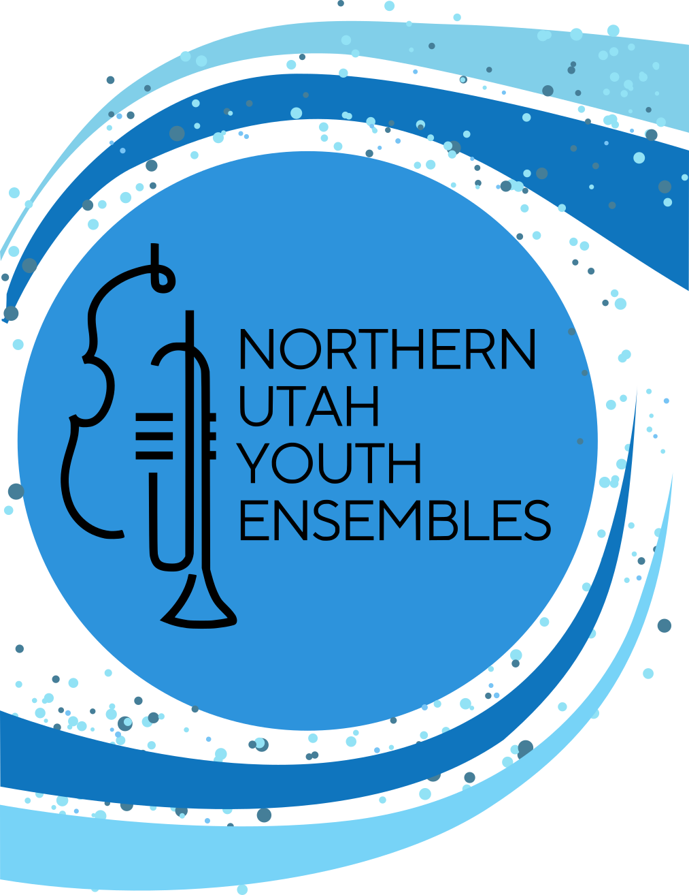
Fall Concert
Weber High School
3:00 pm November 21, 2026

The famous 1812 Overture is a staple at patriotic summer concerts all over the USA. It actually commemorates the Russian defeat of Napoleon in 1812. This version condenses the original 15+ minutes of music by highlighting several iconic sections - the opening hymn, pastoral interlude, Russian folk dance, and the victory melody with the Russian anthem. Sorry, no cannons in this version.

This piece may be about Arlington, Virginia or any other Arlington, the composer doesn't give details. Listen for the rhythmic energy that surrounds a more lyrical middle section. Del Borgo wrote many pieces for youth orchestras, and his music was played at the 1980 Winter Olympic closing festivites.
This is a festival march that pays tribute to the heroes of everyday life. Melodic lines trade off among sections, giving everyone a chance to play.
A prelude to the winter holdidays, this joyous blend of Holiday Carols is inspired by jazz, R&B, and soul.
Composer Michael Oare captures the drama of the massive spiralling storms known as cyclones. The relative peace of the opening measures is transformed by the arrival of the tempest.
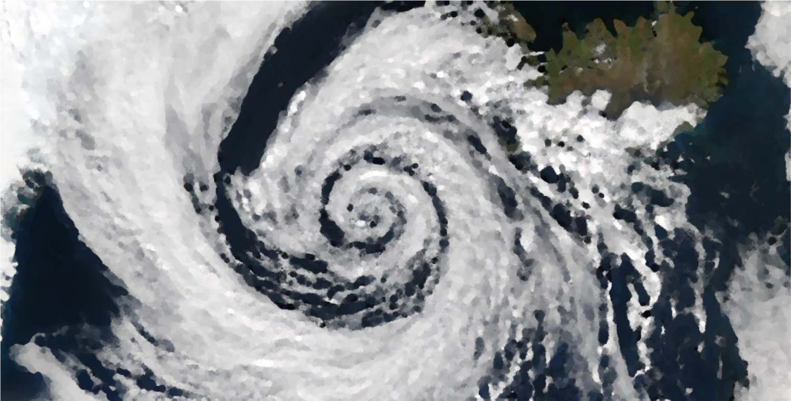
x
Symphony No.8 "Unfinished"
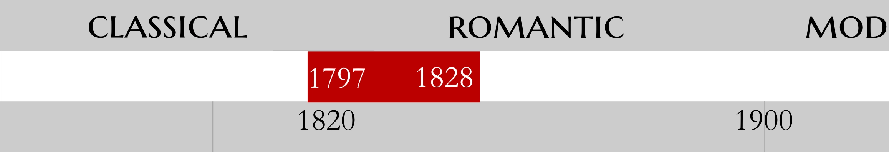
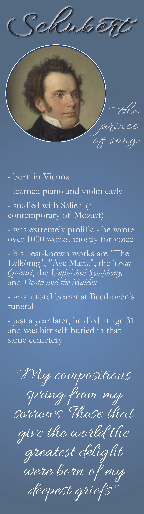
Chaconne in G minor
[vih-TAL-ee]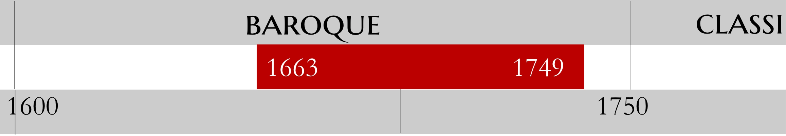
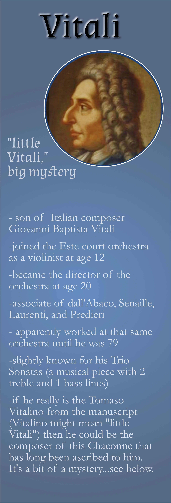
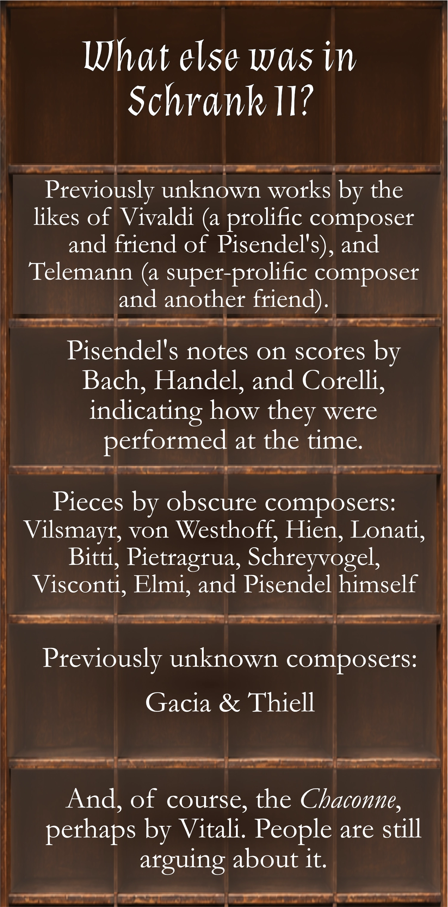
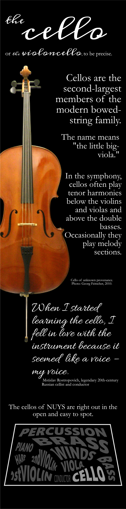
Adagio from Spartacus
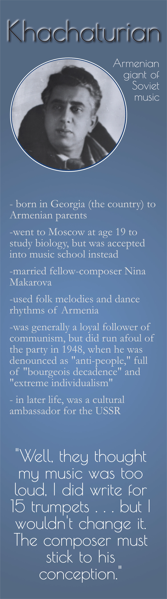
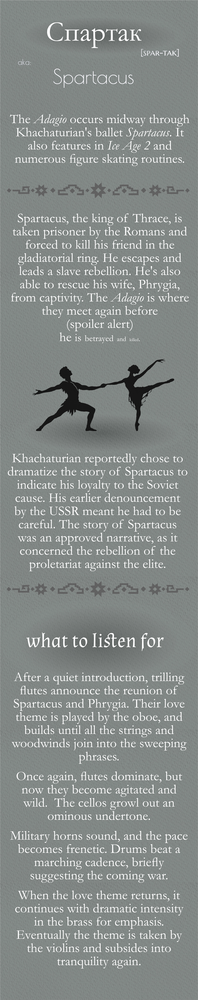
How to Train Your Dragon
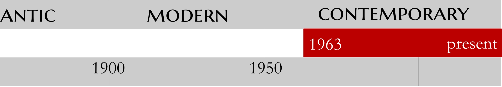
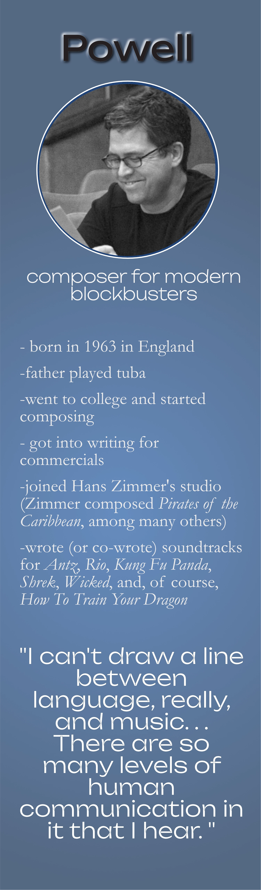
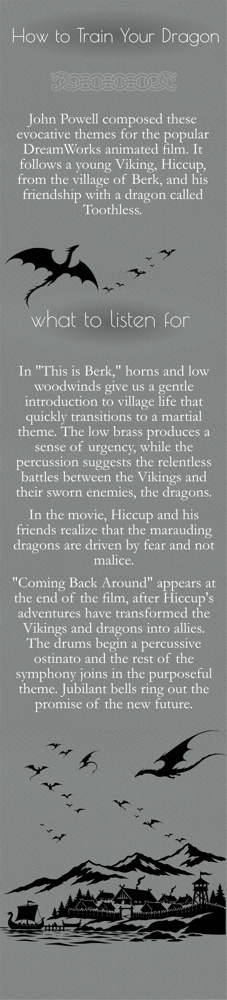